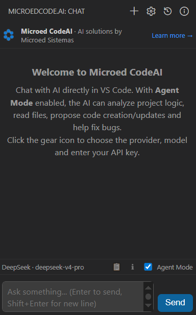
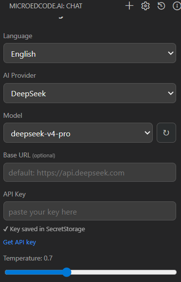
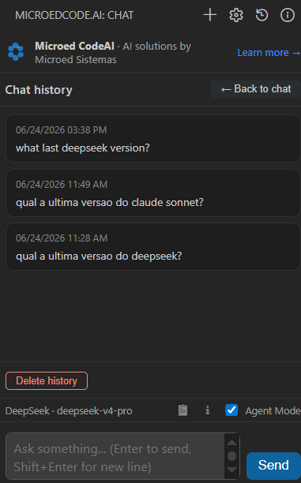
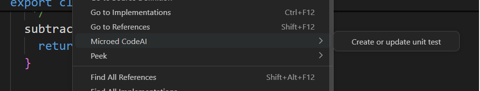

O Microed CodeAI traz um copiloto de IA direto para o painel lateral do VS Code. Converse, peça análises e deixe o Modo Agente ler, entender e escrever código por você — com interface em português e inglês e a IA que você escolher.
Grátis · disponível no VS Code Marketplace · suas chaves de API ficam seguras no seu computador
Um assistente de IA completo, integrado ao seu fluxo de trabalho, sem sair do VS Code.
Converse com a IA enquanto programa, com respostas em tempo real (streaming), markdown e botão para copiar blocos de código.
A IA lê arquivos, busca no código, consulta erros do editor e propõe a criação ou atualização de arquivos inteiros.
Cada alteração pode virar uma proposta: revise com "Ver diff" e confirme com "Aplicar". Nada muda sem a sua aprovação.
Selecione um trecho ou arquivo e gere (ou atualize) testes unitários cobrindo casos de sucesso, de borda e de erro.
OpenAI, Anthropic/Claude, DeepSeek, Ollama (local) ou qualquer API compatível com OpenAI. Troque de modelo quando quiser.
As chaves de API ficam guardadas com segurança no SecretStorage do VS Code, no seu próprio computador.
Conheça a interface do Microed CodeAI em ação.




O Microed CodeAI detecta automaticamente o idioma do seu VS Code. Você também pode alternar entre português e inglês a qualquer momento pelo seletor no painel de configuração.
VS Code em português? A extensão segue automaticamente. Em inglês ou qualquer outro idioma, alterna para inglês.
Dropdown "Português / English" no painel de configuração. A escolha é salva e mantida ao reabrir o VS Code.
Todos os textos são traduzidos: painel de configuração, chat, botões, mensagens de erro e ações do agente.
Com o Modo Agente ativado, o Microed CodeAI trabalha em passos: investiga a base de código, junta o contexto necessário e raciocina até propor a melhor solução — como um par de programação que nunca dorme.
Todas as conversas são salvas automaticamente. Acesse, restaure ou apague a qualquer momento.
Cada conversa é salva automaticamente no projeto (.microedcodeai/historico.json). Nada se perde.
Botão 📋 na barra inferior exibe todas as conversas agrupadas por data, da mais recente à mais antiga.
Clique em qualquer item do histórico para carregar a conversa completa de volta no chat.
Novos modelos são lançados constantemente. Clique no botão ↻ ao lado do seletor de modelo para buscar a lista mais recente — sem precisar reinstalar a extensão.
O botão ↻ busca a lista atualizada do JSON público em microed.com.br, sem necessidade de chave de API.
O resultado é salvo em cache local (.microedcodeai/modelos.json) e persiste entre sessões — mesmo offline.
Botão ℹ️ na barra inferior exibe informações da extensão: versão, descrição e links para o site e Marketplace.
Escolha o provedor e o modelo no painel de configuração, ou digite o nome do modelo manualmente.
LM Studio, Groq, OpenRouter e outros serviços compatíveis com o formato da OpenAI também funcionam. Com o Ollama, rode modelos 100% localmente — sem precisar de chave de API.
Instale direto pelo VS Code Marketplace. Leva menos de um minuto.
No VS Code, abra a aba Extensões pelo atalho Ctrl+Shift+X (ou Cmd+Shift+X no Mac).
Pesquise por Microed CodeAI e localize a extensão publicada por Microed Sistemas.
Clique em Instalar, depois no ícone do Microed CodeAI na barra lateral, configure o provedor e a chave de API e converse.
Com o code no PATH, instale direto pelo terminal:
code --install-extension microedsistemas.microedcode-ai
Ou acesse a página da extensão no Marketplace e clique em Install.
Leve, gratuito e em português. Instale o Microed CodeAI e tenha um copiloto de IA dentro do seu editor.
Sim. A extensão é gratuita. Você só precisa de uma chave de API do provedor de IA que escolher (ou usar o Ollama, que roda localmente sem chave).
Sim. A interface está disponível em português e inglês, com detecção automática pelo VS Code e seletor manual no painel de configuração.
Sim. As chaves são guardadas no SecretStorage do VS Code, armazenado de forma segura no seu próprio computador — nunca em arquivos do projeto.
Você decide. No modo de aprovação manual, cada mudança vira uma proposta com os botões "Aplicar", "Ver diff" e "Rejeitar". Nada é alterado sem a sua confirmação.
Sim. O histórico é salvo automaticamente no projeto. Use o botão 📋 na barra inferior para acessar, restaurar ou apagar conversas anteriores.
Clique no botão ↻ ao lado do seletor de modelo no painel de configuração. A extensão busca a lista mais recente do JSON público e salva em cache local.
OpenAI, Anthropic/Claude, DeepSeek, Ollama (local) e qualquer API compatível com OpenAI, como LM Studio, Groq e OpenRouter.
Para provedores em nuvem, sim. Com o Ollama você roda modelos localmente e pode trabalhar de forma totalmente offline.